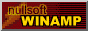

Downloads
You can download things here.
Biohazard Bin Icon


Recreated from the "Word Crimes" music video by Weird Al.
Original design by Jarred Heather.
DOWNLOAD
2 .ico (Windows Icon) files zipped (4 KB)
.icl (Icon Library) file (28 KB)
.dll file (28 KB)
Let's Make Breakfast
A Shockwave (.dcr) Game

Archived from sesamestreet.com. Files are missing, but what is there works.
DOWNLOAD
.zip file (from archive.org) (672 KB)
